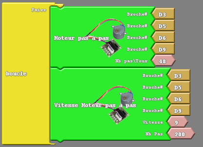
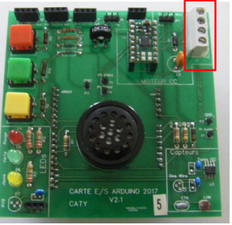

ACTIVITĒ 6
Exercices sur l'utilisation d'un moteur pas à pas,
puis d'un moteur à courant continu
Exercice 6A
Objectif
Faire tourner un moteur pas à pas.
Câbler le moteur pas à pas sur les pin 3, 5, 6 et 9.
Le fil orange sur la pin 3, le fil jaune sur la pin 5, le fil vert sur la pin 6, le fil bleu sur la pin 9, le fil rouge sur le 5V, et le fil marron sur la GND.
Réaliser le programme ArduBlock ci-dessous :
Remarque : les blocs moteur pas à pas se trouvent dans le menu duinoEDU Grove Add.

Transférer le programme et vérifier qu'il fonctionne correctement.
Puis modifier le programme ArduBlock précédent comme ci-dessous :
Enregistrer le programme ArduBlock sous le nom de fichier Exercice6A_votrenom.
Cliquer sur le bouton transférer et vérifier qu'il fonctionne correctement.
Questions à répondre sur copie pour l'Exercice 6A.
Q25) Que constatez - vous ?
Q26) Modifier les valeurs des vitesses, et / ou des nombres de pas. Que se passe t'il ?
Exercice 6B
Objectif
Faire tourner un moteur à courant continu.
Le moteur à courant continu est câblé sur les pins D6 et D9.
IN1 (MOT1_1) sur la pin 6, IN2 (MOT1_2) sur la pin 9.
Câbler le moteur sur le bornier marqué MOT.

Réaliser le programme ArduBlock ci-dessous :
La sortie 10 impose le sens de rotation :
• HIGH ==> tourne dans un sens ;
• LOW ==> tourne dans l'autre sens.
La sortie analogique 11 de type MLI (Modulation par Largeur d'Impulsion) permet de fixer la vitesse de rotation :
• 0 ==> arrêt
• 255 ==> vitesse maximale
Enregistrer le programme ArduBlock sous le nom de fichier Exercice6B_votrenom.
Cliquer sur le bouton transférer et vérifier qu'il fonctionne correctement.
Questions à répondre sur copie pour l'Exercice 6B.
Q27) Faites différents essais de vitesse et sens de rotation. Que constatez - vous ?
Exercice 6C
Objectif
Modifier le programme précédent 6B, afin de faire tourner le moteur dans les deux sens de rotation pendant 3 secondes.
Enregistrer le programme ArduBlock sous le nom de fichier Exercice6C_votrenom.
Vérifier qu'il fonctionne correctement.
Exercice 6D
Objectif
Faire accélérer et décélérer un moteur à courant continu.
Réaliser le programme ArduBlock ci-dessous :
Enregistrer le programme ArduBlock sous le nom de fichier Exercice6D_votrenom.
Transférer le programme et vérifier qu'il fonctionne correctement.
Exercice 6E
Objectif
Modifier le programme précédent 6D afin de faire accélérer et décélérer le moteur dans les deux sens de rotation.
Enregistrer le programme ArduBlock sous le nom de fichier Exercice6E_votrenom.
Vérifier qu'il fonctionne correctement.
Exercice 6Final
Objectif
Maintenant vous êtes prêt à piloter un robot, commencer par un robot 2 roues, puis piloter un robot 4 roues.
Scénario 1 : Faire avancer en vitesse rapide pendant 2 secondes, puis faire reculer en vitesse rapide pendant 2 secondes.
Scénario 2 : Faire avancer en vitesse rapide pendant 2 secondes et ensuite en vitesse lente pendant 4 secondes.
Ensuite faire reculer en vitesse rapide pendant 2 secondes et enfin en vitesse lente pendant 4 secondes.
Scénario 3 : Faire avancer le robot pendant 2 secondes.
Faire tourner le robot à droite.
Faire avancer le robot pendant 2 secondes .
Faire tourner le robot à droite etc ... de façon à faire faire un carré au robot.
Puis faire un carré en faisant tourner le robot à gauche.
Après si le temps le permet on pourra installer un capteur ultra son sur le robot afin de lui faire détecter un obstacle.
Fin de l'activité 6. Fin de toutes les activités.
Créé avec HelpNDoc Personal Edition: Écrire des livres électroniques ePub pour l'iPad